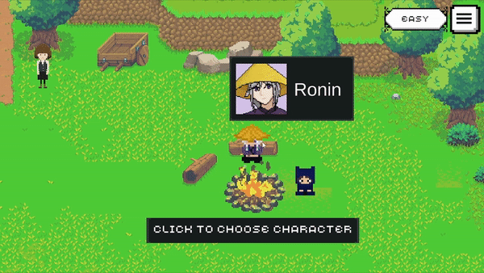
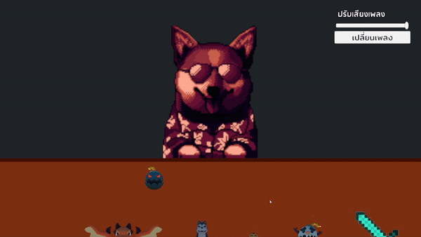
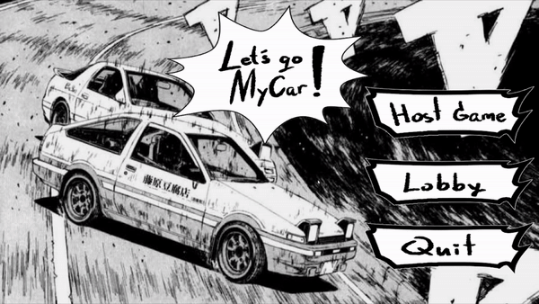

สวัสดีครับ ผมชื่อ ไพศาล อิงควระ เรียนจบมาจากมหาวิทยาลัยกรุงเทพ คณะเทคโนโลยีสารสนเทศและนวัตกรรม สาขาวิชาเกมและสื่อเชิงโต้ตอบ สนใจในตำแหน่งงาน Game Programmer ผมได้มีโอกาสไปฝึกงานกับบริษัท Urnique Studio ในระยะ 6 เดือนและ ในเวลาว่างชอบเรียนรู้สิ่งใหม่ๆ ตอนนี้กำลังศึกษา Shader ครับ
Recent Work
Place of Destination

ภาพที่ 1 : ระบบการต่อสู้ ทิศทางของการโจมตีจะตามเมาส์ของผู้เล่น Enemy มีทั้งหมดสี่แบบด้วยกันแต่ละแบบจะมีวิธีจัดการที่ไม่เหมือนกัน เมื่อ Enemy ตายจะดรอปเงินเพื่อเอาไปซื้อของและ มีโอกาสของดรอปของที่เอาไปจีบตัวละครได้อีกด้วย

ภาพที่ 2 : ระบบร้านค้า ผู้เล่นจะถูกเทเลพอร์ตมาที่นี่หลังจบการต่อสู้เพื่อซื้อของอัพเกรดตัวละครและการคุยกับพ่อค้าจะมีตัวเลือกให้ผู้เล่นได้เลือกระหว่างการ Reroll Item และการ Heal เลือดตัวเองด้วยการจ่ายเงิน

ภาพที่ 3 : ระบบเลือกตัวละครจะมีตัวละครทั้งหมดสองตัวด้วยกันคือ Ronin และ MarksMan ทั้งสองตัวจะมีการเล่นที่แตกต่างกัน เช่น Ronin เป็นตัวละครตีใกล้ที่เน้นให้ Enemy ตีก่อนแล้วเข้าไปตีและ MarksMan ที่เป็นตัวละครยิงไกลที่เน้นการเดินไปโจมตีไป

ภาพที่ 4 : ระบบบทสนทนาได้ใช้ Ink ช่วยในการเช็คว่าเนื้อเรื่องดำเนินถึงจุดไหนแล้วแสดงบทพูดของตัว NPC และ ยังมีระบบความสัมพันธ์ของ NPC ที่ผู้เล่นจีบได้ด้วยการให้ของที่คล้ายกับ Stardew Valley และเนื้อเรื่องของ NPC ที่จีบได้มีให้อ่านจนจบได้
-
Place of Destination เป็นเกมแนว 2D Action Roguelike Dating Sim
-
คุณจะได้รับบทเป็นนักผจญภัย ที่ต้องได้ออกสำรวจดันเจี้ยนต่างๆ คุณจะต้องเอาชนะมอนสเตอร์ในแต่ละรอบและ เก็บเงินมาอัพเกรดตัวละครจากการชื้อ Item ต่างๆ ให้แข็งแกร่งขึ้นเพื่อให้อยู่รอดถึงรอบสุดท้ายที่จะมีบางอย่างรอคุณอยู่และ ยังมีตัวละครที่คุณสามารถจีบได้ด้วยให้ของขวัญที่สามารถหาได้ในการต่อสู้เท่านั้น
-
จุดเด่นของเกมนี้การที่เราเห็นพัฒนาการของตัวละคร เช่นโจมตีแรงขึ้่น วิ่งได้ไวขึ้น เป็นต้นและก็มีความท้าทายในตัวเอง
-
ในเกมนี้มีคนทำทั้งหมด 4 คน ผมรับหน้าที่เป็นโปรแกรมเมอร์และ Project Lead ภายในงานนี้ผมเป็นคนทำระบบทุกอย่างภายในเกม เช่น ระบบ Combat ระบบ Shop ระบบการอัพเกรดตัวละคร การใส่ Animation ให้ตัวละครต่างๆ และระบบ Dialogue ที่ได้ใช้ตัว Ink เข้ามาช่วยในการทำ
-
เกมนี้ได้เข้าร่วมการแข่งขันในรายการ GAME TALENT SHOWCASE 2022 Presented by Bitkub และยังได้เข้ารอบที่มีทั้งหมดสามสิบทีม
Link
Internship Project

ระบบ Combat

โปรเจกต์ที่ได้ทำร่วมกับทาง Urnique Studio ในตำแหน่ง Game Programmer แต่ไม่สามารถลงเกี่ยวกับรายละเอียดของโปรเจกต์ได้ และของที่ผมได้ทำส่วนใหญ่เกี่ยวกับ UI ที่คล้ายๆ กับ Papers, Please การใช้ Tool จาก Asset store เอามาปรับใช้ให้เข้ากับเกมแบบที่ทางทีมต้องการ และการใช้ Json ในการนำเข้าข้อมูลต่างๆ ภายในเกมสามารถลดเวลาได้จาก 1-2 ชั่วโมงเหลือแค่ 2 นาที
Link
Let's Go My Car

ภาพที่ 1 : ระบบขับรถได้ใช้ Mirror ช่วยทำในส่วนของ Multiplayer เช่นการเช็คว่ารถคันไหนเป็นของผู้เล่นและ ผมออกแบบการเคลื่อนที่ของรถทำอยู่บนเครื่องของผู้เล่นเพราะต้องการให้มีความลื่นไหลมากที่สุด

ภาพที่ 2 : ระบบตารางคะแนนหลังจบเกม เมื่อผู้เล่นเข้าถึงเส้นชัยแล้วจะเปิดหน้าคะแนนขึ้นมาโดยอัตโนมัติแล้วเก็บเวลาของผู้เล่นคนนั้นไว้และทำแบบนี้จนครบทุกคนและทุกคนต้องเข้าเส้นชัยถึงจะสามารถออกจากเกมได้

ภาพที่ 3 : ระบบล็อบบี้ ในหน้านี้ผู้เล่นสามารถกดเลือกรถสีต่างๆ ได้แต่ว่าการเลือก Map นั้นจะมีแค่ Host เท่านั้นที่เลือกได้และชื่อของผู้เล่นนั้นจะมาจาก Steam ของผู้เล่นเองและต้องให้ทุกคนกดพร้อม Host ถึงจะเรื่มเกมได้

ภาพที่ 4 : ระบบเข้าล็อบบี้ เมื่อมีคนกดสร้างห้องไว้ ห้องจะแสดงขึ้นอยู่ที่บนสุดและตัวอักษรจะมีสีเขียว ในการเป็น Client ผู้เล่นจะสามารถทำทุกอย่างได้เหมือน Host แต่จะไม่สามารถเลือก Map กับกด Start Game ไม่ได้
-
Let's Go My Car เป็นเกม Racing Multiplayer ที่ผู้เล่นสามารถเล่นกับเพื่อนได้ถึง 4 คน ผ่านทางเซิร์ฟเวอร์ของ Steam
-
เกมนี้ได้ใช้ Tool เข้ามาช่วยคือ Mirror ใช้ทำระบบที่เกี่ยวกับ Multiplayer ต่างๆ ภายในเกม และ Steamworks ใช้ในการทำระบบล็อบบี้ที่ใช้ตัวเซิร์ฟเวอร์ของ Steam เป็นตัวกลางของการ Host เกม
-
ในเกมนี้มีคนทำทั้งหมด 2 คน ผมได้รับหน้าที่เป็นโปรแกรมเมอร์ที่เขียนระบบทั้งหมดภายในเกม เช่นระบบล็อบบี้ ระบบการเคลื่อนที่ของรถและ ระบบอย่างการเข้าล็อบบี้เป็นต้น
Link
Misc
Train To Hell - VR

Train To Hell เป็นเกมที่พัฒนาให้กับเครื่อง VR ในเกมนี้มีคนทำทั้งหมด 2 คน ผมได้รับหน้าที่เป็นโปรแกรมเมอร์ที่เขียนระบบทั้งหมดภายในเกม
Link
LifeForceTenka Clone

เกมนี้ถูกพัฒนาด้วย Unreal Engine 4 และเรียนรู้เกี่ยวกับการทำเกมและใช้ Asset จาก
UE4 FPS : Lifeforce Tenka Clone
Link
BonkSlayer

BonkSlayer เป็นเกมแนว 2D Top-Down Shooter เป็นเกมแรกที่ได้ทำขึ้นใน Unity
Link
Video
Play on Web
Github